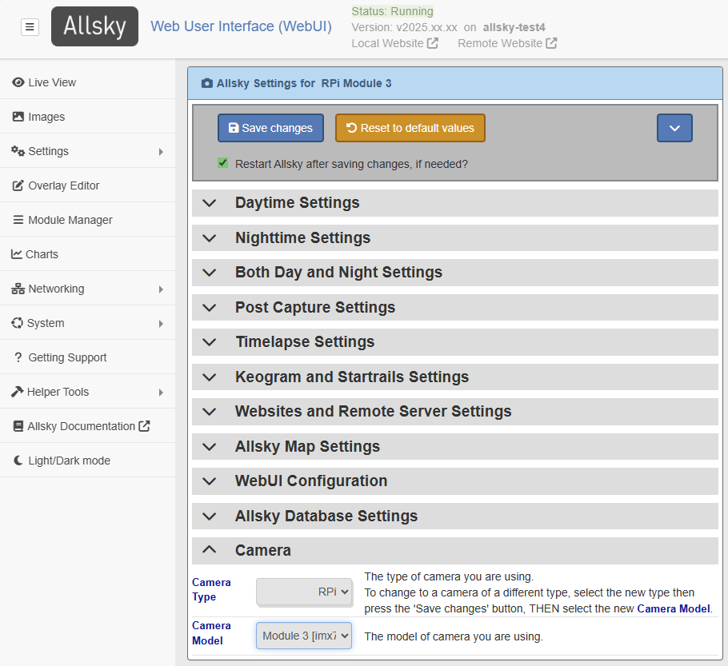

The WebUI contains many pages; the two used to changes settings are the Allsky Settings and Editor pages, and are described below.
Allsky Settings WebUI Page
This section lists the settings that are updated in the WebUI's Allsky Settings page. A (partial) typical page is below.

RPi camera users, note that several settings have different ranges on Buster versus Bullseye, so you'll need to update them when upgrading to Bullseye. For example, Contrast in Buster ranged from -100 to 100, whereas in Bullseye it starts at 0.
The exact list of settings available depends on your camera model; settings specific to a camera type (e.g., RPi or ZWO) are indicated as such in the table below. Where appropriate, the WebUI displays the minimum, maximum, and default values when you hover over a value, and only displays settings the camera supports, like cooler temperature for cooled cameras.
- CD indicates the setting's default is Camera Dependent and is displayed in the WebUI.
- AW indicates a setting who's value is uploaded to your Allsky Website(s) when changed.
| WebUI Setting | Default | Description |
|---|---|---|
| Daytime settings | ||
| Daytime Capture | Yes | Enable to capture images during the day. |
| Daytime Save AW | No | Enable to save images during the day (they are always saved at night). Only applies if Daytime Capture is enabled. |
| Auto-Exposure | Yes | Turns on/off Auto-Exposure, which delivers properly exposed images even if the overall brightness of the sky changes due to cloud cover, sun, etc. |
| Max Auto-Exposure | CD | The maximum exposure in milliseconds when using Auto-Exposure. When Auto-Exposure is on, this value will be used as the delay between frames. Ignored if Auto-Exposure is off. |
| Manual Exposure | 0.5 | Manual exposure time in milliseconds. If Auto-Exposure is on this value is used as a starting exposure. |
| Mean Target | 0.5 | The target mean brightness level when Auto-Exposure is on. Ranges from 0.0 (pure black) to 1.0 (pure white). Best used when both Auto-Exposure and Auto-Gain are enabled. |
| Mean Threshold | 0.1 | When using Mean Target,
this specifies how close (plus or minus) the target brightness should be to the
Mean Target.
For example, if Mean Target is 0.4 and
Mean Threshold is 0.1
then the target brightness ranges from 0.3 to 0.5
|
| Delay | 5000 | Time in milliseconds to wait between the end of one image and the start of the next. |
| Auto-Gain | No | Turns on/off Auto-Gain which delivers properly exposed images even if the overall brightness of the sky changes. With RPi cameras, this should typically be turned on. With ZWO cameras you'll probably want this off and use the lowest gain possible since daytime images are bright and don't need any gain. |
| Max Auto-Gain | CD | Maximum gain when using Auto-Gain. Ignored if Auto-Gain is off. |
| Gain | CD | Gain is similar to ISO on regular cameras.
When Auto-Gain is on, this value is used as a starting gain.
When Auto-Gain is off,
increasing this produces brighter images, but with more noise.
The default daytime gain is the minimum possible for the camera since daytime images are normally bright and don't need any additional gain. |
| Binning | 1x1 | Bin 2x2 collects the light from 4 pixels to form one larger pixel on the image.
Bin 3x3 uses 9 pixels, etc.
Increasing the bin results in smaller,
lower-resolution images and reduces the need for long exposure.
Look up your camera specifications to know what values are supported.
During the day this setting is usually only changed for testing. Binning on CCD cameras normally produces brighter images. CMOS camera may, or may not produce brighter images, depending on the camera model. |
| Auto White Balance | No | Sets daytime auto white balance. When used, Red balance and Blue balance are used as starting points. |
| Red Balance | CD | The intensity of the red component of the image. |
| Blue Balance | CD | The intensity of the blue component of the image. |
| Frames To Skip | 5 | When starting Allsky during the day, skip up to this many images
while the auto-exposure software gets to the correct exposure.
Only applies if daytime Auto-Exposure is enabled. |
| Cooling | No | (ZWO cooled cameras only) Enable to use cooling on cameras that support it. |
| Target Temp. | 0 | (ZWO cooled cameras only) Sensor's target temperature when cooler is enabled. In degrees Celsius. |
| Tuning File | No | (RPi on Bullseye only) Name of the optional daytime tuning file. See this documentation for more information. |
| Nighttime settings
Unless otherwise specified, these setttings are the same as the daytime ones. |
||
| Auto-Exposure | Yes | |
| Max Auto-Exposure | CD | |
| Manual Exposure | 10000 | |
| Mean Target | 0.2 | |
| Mean Threshold | 0.1 | |
| Delay | 10 | |
| Auto-Gain | No | With ZWO cameras enabling Auto-Exposure and Auto-Gain together can produce unpredictable results so testing is needed. |
| Max Auto-Gain | CD | |
| Gain | CD | The default is one-half the maximum for the camera. |
| Binning | 1x1 | |
| Auto White Balance | No | |
| Red Balance | CD | |
| Blue Balance | CD | |
| Frames To Skip | 1 | Only applies if nighttime Auto-Exposure is enabled. |
| Cooling | No | (ZWO cooled cameras only) |
| Target Temp. | 0 | (ZWO cooled cameras only) |
| Tuning File | No | (RPi on Bullseye only) |
| Both daytime and nighttime settings | ||
| Configuration File | [none] | Configuration file to use for settings. Not currently used. |
| Extra Parameters | (RPi only) Any additional parameters to send to the
libcamera-still image capture program.
It supports a lot of settings that Allsky doesn't (e.g., auto-focus options),
and this field allows you to enter those settings.
|
|
| Saturation | CD | (RPi only) Sets saturation from black and white to extra saturated. |
| Contrast | CD | (RPi only) Changes the difference between blacks and whites in an image. |
| Sharpness | CD | (RPi only) Changes the sharpness of an imgage. Images that are too sharp look unnatural. |
| Gamma | CD | (ZWO only) Increases or decreases contrast between dark and bright areas. |
| Aggression | 75% | (ZWO only) Specifies how much of a calculated exposure change should be made during auto-exposure. Lower numbers smooth out brightness changes but take longer to react to changes. |
| Gain Transition Time | 15 | (ZWO only) Number of minutes over which to increase or decrease the gain when going from day-to-night or night-to-day images. This helps smooth brightness differences. Only works if nighttime Auto-Gain is off. 0 disables transitions. |
| Image Width | 0 | 0 uses the sensor's full width in pixels.
Otherwise, with ZWO cameras the
Image Width and Image Height
settings set a crop area around the center of the sensor,
the same as the CROP setting in
config.sh.
With RPi cameras these settings decrease resolution of the full-sensor image,
then increase the resolution, thereby negating the changes.
There is no reason to set the Width and Height with RPi cameras. |
| Image Height | 0 | Same as Width but for the sensor's height. |
| Image Type | auto | Image format: auto: automatically picks the best type of image based on the camera. If you have a color camera it will use RGB24; mono cameras use RAW16 if the output file is a .png, otherwise RAW8 is used. RAW8: 8-bit mono. RGB24: color (red, green, blue), 8 bits per channel. RAW16: 16-bit mono. |
| Quality | 95 | For JPG images, this specifies the quality - 0 (low quality) to 100 (high quality). Larger numbers produce higher-quality, but larger, files. For PNG, this is the amount of compression - 0 for no compression (but quicker to save) to 9 for highest compression (but slowest to save). If you use very short delays between pictures you may want to play with these numbers to get the quickest delay possible. |
| Auto USB Bandwidth | Yes | (ZWO only) Automatically sets the USB bandwidth. |
| USB Bandwidth | CD | (ZWO only) How much of the USB bandwidth to use. |
| Filename AW | image.jpg | The name of the image file. Supported extensions are jpg and png. |
| Rotation | None | (RPi on Bullseye only) How to rotate the image. On Bullseye images can only be rotated 180 degrees. |
| Flip | No flip | How to flip the image (No flip, Horizontal, Vertical, or Both). |
| Notification Images | Yes | Displays notification images, e.g., "Camera off during day" if daytime images are not being taken. |
| Consistent Delays Between Images | Yes | Enable this to force the time between the start of exposures to be a consistent length (Max Auto-Exposure + Delay). Doing this will result in timelapse video frames being equally spaced, for example, every 90 seconds, regardless of how long an individual frame's exposure is. |
| Latitude AW | Latitude of the camera. Formats include: 123.4N, 123.4S, 123.4, or -123.4. Southern hemisphere is negative. | |
| Longitude AW | Longitude of the camera. Formats include: 123.4E, 123.4W, 123.4, or -123.4. West is negative. | |
| Angle AW | -6 | Altitude of the Sun above or below the horizon at which daytime and nighttime switch.
Can be negative (Sun below horizon) or positive (Sun above horizon).
|
| Take Dark Frames | No | Enable to take dark frames which are use to decrease noise in images.
See the in-depth explanation of dark frames, including how to take and use them. |
| Use Dark Frames | No | Enable to perform dark frame subtraction at night.
Requires that you first took dark frames using the Take Dark Frames setting. |
| Locale | The locale is used to determine what the thousands and decimal separators are
as well as the language to use for many non-Allsky commands.
If you have never set the locale in Allsky,
the installation script will display a list of locales installed on your Pi,
highlighting the current one.
If it's the correct one, press the TAB key until the cursor is
over <Ok>, then press ENTER.
The locale only needs to be set once and won't change unless you reinstall the Pi OS. Changing the locale requires a reboot, which must be done before continuing the installation.If the correct locale isn't in the list it needs to be installed, so <Cancel> out of the installation and run
sudo raspi-config, selecting Localisation Options,
followed by the Locale option.
You will be shown a drop-down list with hundreds of locales; when you find the correct
one for your language and country, press the SPACE bar,
then TAB to the <Ok> button.
It will take a few seconds for the locale to be installed;
when done, re-run the installation script selecting the locale you just installed.
|
|
| ZWO Exposure Type | Snapshot | (ZWO only) Determines what type of exposures to take:
|
| Histogram Box | 500 500 50 50 | (ZWO only) X and Y size of histogram box in pixels and the middle point of the box in percent. This box is used to determine the average brightness of the image for auto-exposure compensation. If the Sun goes through the center of your image you may want to move the box. |
| Debug Level | 0 | Determines the amount of output in the log file.
Log entries can also be viewed with journalctl -u allsky.
0 outputs error messages only. 4 outputs a LOT of messages and generally should only be used if an Allsky developers directs you to. |
| Require WebUI Login | Yes | Determines if you need to log into the WebUI. If you Pi is accessible on the Internet, do NOT disable this!! |
| Image overlay settings
See the
overlay page
for details on the image overlay.
| ||
| Overlay Method | legacy | Set to module
to have image overlays added by the new, enhanced
overlay program.
In this mode, the overlay settings below do NOT apply. The default will be module in the next major Allsky release, and in the release after that the legacy mode as well as this "Image overlay settings" section will be removed. When setting to module, don't forget to enable the daytime and/or nighttime Overlay Modules in the Overlay Manager. |
| Show Time | Yes | Display the time the picture was taken in the overlay? |
| Time Format | %Y%m%d %H:%M:%S | Determines the format of the displayed time.
Run man 3 strftime to see the options. |
| Show Temperature | Yes | (ZWO only) Display the camera sensor temperature in the overlay? |
| Temperature Units | Celsius | Determines what unit(s) the temperature will be displayed in (Celsius, Fahrenheit, or Both). |
| Show Exposure | Yes | Display the exposure time in the overlay? If Auto-Exposure is enabled, "(auto)" will appear after the exposure. |
| Show Gain | Yes | Display the gain in the overlay? If Auto-Gain is enabled, "(auto)" will appear after the gain. |
| Show USB | No | (ZWO only) Display the USB Bandwidth in the overlay? This is primarily for debugging. |
| Show Mean Brightness | No | Display the mean (average) brightness in the overlay? This value is used to determine the correct auto-exposure and auto-gain levels. |
| Show Histogram Box | No | (ZWO only) Show the histogram box on the image? |
| Show Focus Metric | No | Display a focus metric in the overlay to help you focus the camera? Higher numbers are better, but only use when the brightness isn't changing. |
| Text Overlay | Text overlay that appears below the time, in the same font. | |
| Extra Text File | The full path name to a text file which will be displayed under other information. The file can contain multiple lines which will be displayed underneath each other. | |
| Max Age Of Extra | 0 | If you specified an Extra Text File then it must be updated within this number of seconds; if not it's contents will not be displayed. Set to 0 to ignore this check and always display the contents of the file. |
| Line Height | 30 | The line height of the text displayed in the image. If you change the font size then adjust this value if required. |
| Text X | 15 | Start of text from the left side, in pixels. |
| Text Y | 35 | Start of text from the top, in pixels. |
| Font Name | Simplex | Font type for the overlay. |
| Font Color | 255 0 0 | Font color in Blue, Green, and Red (BGR). NOTE: When using RAW 16 only the first two values are used, i.e., 255 128 0. |
| Small Font Color | 0 0 255 | Small font color in BGR. NOTE: When using RAW 16 only the first two values are used, i.e., 255 128 0. |
| Font Smoothness | Antialiased | Controls the smoothness of the fonts. |
| Font Size | 7 | Font size. This is impacted by the sensor size so you'll need to experiment with this. |
| Font Weight | 1 | Font line thickness. |
| Use Outline Font | No | Should an outline to the text overlay be added to improve contrast? |
| WebUI Configuration
Settings dealing with the WebUI itself. | ||
| Images Sort Order | Ascending | Determines how the images for a day in the
the WebUI's Images page are displayed.
Ascending sorts oldest image to newest. Descending sorts newest (i.e., most recent) image to oldest. |
| Show Updated Message | No | Disable to hide the Daytime images updated every... message on the WebUI's Live View page. |
| Allsky Map and Website Setting
If you want your allsky camera's location to display on the Allsky map, the information in this section will be sent to the map server every other morning to ensure it's fresh. The server automatically removes old data. Note that only a limited number of updates per day are allowed to catch bogus updates. | ||
| Display Settings | No | People sometimes ask others what settings they are using.
Enable this setting to add a link to your Allsky Website's popout that displays your
settings in the WebUI's Allsky Settings page.
Only applies if you are running the Allsky Website. |
| Show on Map | No | Enable to have your camera appear on the
Allsky map.
If off, the URL settings below are ignored. |
| Website URL | Your website's URL, for example: https://www.thomasjacquin.com/allsky.
If your camera is not accessible on the Internet or you do not want the
map page to link to your website, leave this field blank.
If a Website URL is specified, the Image URL must also be specified, and vice versa. | |
| Image URL | The URL to your allsky image, for example: https://www.thomasjacquin.com/allsky/image.jpg.
Right-click on the image and select Copy Image Address to determine what to
put in this field.
If you have the Allsky Website installed on your Pi and are using its image, you may need to set this field to <Pi name>/current/tmp/image.jpg or whatever's in the imageName field of your website's configuration.json file. Be careful of using "http" versus "https", and after enabling Show On Map, look at the map to ensure you can see your image. If your camera is not accessible on the Internet or you do not want the image to appear on the map page, leave this field empty. However, one of the main purposes of the map is to show pictures from cameras around the world, so adding your image URL is strongly encouraged. | |
| Location AW | The location of your camera. You can put any level of detail you want. | |
| Owner AW | The owner of the camera - your name, an association name, an observatory, etc. | |
| Camera AW | The type and model of your camera, for example: ZWO ASI224MC or RPi HQ. This field is required and a default value is set during Allsky installation. | |
| Lens AW | The lens you're using on your camera, for example: Arecont 1.55. | |
| Computer AW | The computer runni g your allsky camera, for example: Raspberry Pi 3. This field is required and a default value is set during Allsky installation. | |
| Latitude & longitude AW | These are described above and are
required for your camera to appear on the Allsky Map.
The actual values are not displayed on the map, but users can zoom in to see exactly where the camera is. If that bothers you, change their values slightly. | |
| Camera Type | ||
| Camera Type | The type of camera you are using: ZWO or RPi.
If you have both a ZWO and RPi camera, this setting determines which to use. If you replace a camera with another one of the same type (e.g., a ZWO ASI120 with a ZWO ASI290) select Refresh in the drop-down. | |
| Camera Model | This read-only field displays the model of camera you are using.
It is determined automatically based on what camera is connected to your Pi.
If more than one camera of the specified type is connected, the first one is used. | |
Editor WebUI Page
This section lists the settings that are updated in the WebUI's Editor page. A typical page is below:

This page allows you to edit the config.sh file, and if you have a local and/or remote Allsky Website installed, the ftp-settings.sh, configuration.json, and remote_configuration.json files can also be edited.
The table below describes the settings in the
config.sh file.
Settings in the ftp-settings.sh file are described in the
ftp-settings.sh settings page.
Settings in the configuration.json files are described in the
Allsky Website Settings page.
Information on the color scheme used by the Editor in the screenshot above is here .
config.sh settings
These settings let you configure the overall behavior of Allsky, and are updated by clicking on the WebUI's Editor page, then selecting config.sh in the drop-down list at the bottom of the page.
| Setting | Default | Description |
|---|---|---|
| image.jpg Settings | ||
| IMG_UPLOAD | false | Upload the current image to a local or remote Allsky Website?
Ignored if you don't have an Allsky Website. |
| IMG_UPLOAD_ORIGINAL_NAME | false | Should the name of the uploaded image be image.jpg (if false)
or image-YYYYMMDDHHMMSS.jpg (if true)?
This is rarely used and is ignored if you don't have an Allsky Website or IMG_UPLOAD is false. |
| IMG_UPLOAD_FREQUENCY | 1 | How often should the current image be uploaded?
This is useful for slow or costly networks.
This only applies if IMG_UPLOAD is "true". |
| IMG_RESIZE | false | Resize images before cropping and stretching?
Large sensor cameras like the RPi HQ may need to be resized (i.e., shrunken)
in order for timelapses to work.
Typically you'll want the IMG_WIDTH / IMG_HEIGHT ratio to be the same as the sensor's width / height ratio, otherwise images will be distorted. |
| IMG_WIDTH | 1520 | The width of the resized image.
Must be an even number. The default is just an example. |
| IMG_HEIGHT | 2028 | The height of the resized image.
Must be an even number. The default is just an example. |
| CROP_IMAGE | false | Crop images before stretching? This is often used to remove the dark areas around an image when using a fisheye lens. The image is cropped from the center so you'll need to experiment with the correct settings. Cropped images on the left or top will likely need the Text X and/or Text Y WebUI settings changed. |
| CROP_WIDTH | 640 | The width of the resulting image.
Must be an even number. The default is just an example. |
| CROP_HEIGHT | 480 | The height of the resulting image.
Must be an even number. The default is just an example. |
| CROP_OFFSET_X | 0 | The X offset to use when cropping. To move the crop rectangle left, use a negative number. |
| CROP_OFFSET_Y | 0 | The Y offset to use when cropping. To move the crop rectangle up, use a negative number. |
| AUTO_STRETCH | false | Stretch the image?
This increases the contrast without saturating highlights or shadows.
See this page for more information on stretching images. |
| AUTO_STRETCH_AMOUNT | 10 | How much to increase the contrast. 0 is none, 3 is typical, and 20 is a lot. |
| AUTO_STRETCH_MID_POINT | 10% | Where the maximum change "slope" in contrast should fall in the image (0% is white; 50% is middle-gray; 100% is black). |
| RESIZE_UPLOADS | false | Resize uploaded pictures?
You may want images on your Pi to have higher resolution than images uploaded to an Allsky Website. For example, images from cameras with large sensors won't fit on most monitors at full resolution, so huge images in some senses are a waste. |
| RESIZE_UPLOADS_WIDTH | 962 | Sets the width of resized images being uploaded.
Must be an even number. The default is just an example. |
| RESIZE_UPLOADS_HEIGHT | 720 | Sets the height of resized images being uploaded.
Must be an even number. The default is just an example. |
| IMG_CREATE_THUMBNAILS | true | Create thumbnails of the images and save in ~/allsky/images? If you never look at them via the WebUI's Images page, consider changing this to "false". |
| REMOVE_BAD_IMAGES_THRESHOLD_LOW | 0.01 | Images whose mean brightness is below this percent will be removed.
Useful values range from 0.01 to around 0.2.
Set to 0 to disable this check.
|
| REMOVE_BAD_IMAGES_THRESHOLD_HIGH | 0.9 | Images whose mean brightness is above this percent will be removed.
Useful values range from 0.8 to around 0.95.
Set to 0 to disable this check.
|
| Timelapse Settings | ||
| TIMELAPSE | true | Build a timelapse video at the end of the night? |
| TIMELAPSEWIDTH | 0 | Changes the width of the generated timelapse; must be an even number.
0 uses the images's full size.
Large sensor cameras like the RPi HQ often need the timelapse to be shrunk in order for timelapses to work (or the individual images need to be shrunk). |
| TIMELAPSEHEIGHT | 0 | Changes the height of the generated timelapse; must be an even number.
0 uses the images's full size.
If you change the width and height you'll probably want the resulting aspect ratio to match the original images. |
| TIMELAPSE_BITRATE | 5000k | Bitrate the timelapse video will be created with.
Higher values produce better quality video but larger files.
Be sure to include the trailing k. |
| FPS | 25 | The timelapse video
Frames
Per
Second.
Higher numbers produce smoother, but shorter, videos. |
| VCODEC | libx264 | Encoder used to create the timelapse video. Rarely changed. |
| PIX_FMT | yuv420p | Pixel format.
If you don't know what this is, don't change it. |
| FFLOG | warning | Level of debugging information output when creating a timelapse.
Set to info for more output.
Primarily used for debugging or when tuning the algorithm.
|
| KEEP_SEQUENCE | false | Keep the sequence of symbolic links created when creating a timelapse?
Primarily used when debugging. |
| TIMELAPSE_EXTRA_PARAMETERS | Any additional timelapse parameters. Run ffmpeg -? to see the options. |
|
| UPLOAD_VIDEO | false | Upload the timelapse video to your Allsky Website?
If not set, the timelapse videos can still be viewed via the
Images link on the WebUI.
Ignored if you you do not have an Allsky Website. |
| TIMELAPSE_UPLOAD_THUMBNAIL | true | Upload the timelapse video's thumbnail to your Allsky Website?
Many remote servers don't support thumbnail creation so the thumbnail needs to be
created on the Pi and uploaded.
Not needed if your only Allsky Website is on your Pi. |
| Mini-Timelapse Settings | ||
| TIMELAPSE_MINI_IMAGES | 0 | A "mini-timelapse" only includes the most recent images and is created often.
It's a good way to see "recent" activity.
This setting determines the number of images in the mini-timelapse.
Keep in mind the more images you have the longer it'll take to create the video.
30 is a good starting point.
Note that each mini-timelapse overwrites the prior one. The following settings only apply if this settings is greater than 0. |
| TIMELAPSE_MINI_FORCE_CREATION | true | Should a mini-timelapse be created even if TIMELAPSE_MINI_IMAGES images haven't been taken yet? For example, you want 15 images in each mini-timelapse but only 5 have been taken; should a mini-timelapse still be created? |
| TIMELAPSE_MINI_FREQUENCY | 5 | After how many images should the mini-timelapse be created?
Slower machines and machines with slow networks should use higher numbers.
3 - 5 works well on a Pi 4 with 4 GB memory.
Every TIMELAPSE_MINI_FREQUENCY images a new mini-timelapse is created using the last TIMELAPSE_MINI_IMAGES images. For example, every 5 frames a new mini-timelapse is created using the most recent 15 images.
Be very careful when setting the TIMELAPSE_MINI_IMAGES and TIMELAPSE_MINI_FREQUENCY settings. If either or both numbers are too high, or the daytime or nighttime Delay is too short, there may not be enough time to finish one mini timelapse creation before the next one starts. If this happens the second one will be aborted and you'll see a System Message in the WebUI (you may need to refresh your browser page). |
| TIMELAPSE_MINI_UPLOAD_VIDEO | true | Like UPLOAD_VIDEO but for mini-timelapses. |
| TIMELAPSE_MINI_UPLOAD_THUMBNAIL | true | Like TIMELAPSE_UPLOAD_THUMBNAIL but for mini-timelapses. |
| TIMELAPSE_MINI_FPS | 5 | Like FPS but for mini-timelapses.
Since mini-timelapses contain a very small number of images, this setting should be small to avoid very short videos. |
| TIMELAPSE_MINI_BITRATE | 2000k | Like TIMELAPSE_BITRATE but for mini-timelapses.
This is normally smaller than a full timelapse to save on processing time. |
| TIMELAPSE_MINI_WIDTH | 1014 | Like TIMELAPSEWIDTH but for mini-timelapses.
Must be an even number. The default is just an example. |
| TIMELAPSE_MINI_HEIGHT | 760 | Like TIMELAPSEHEIGHT but for mini-timelapses.
Must be an even number. The default is just an example. |
| Keogram Settings | ||
| KEOGRAM | true | Build a keogram image at the end of the night? |
| KEOGRAM_EXTRA_PARAMETERS | various | Additional keogram parameters.
Execute ~/allsky/bin/keogram --help for a list of options. |
| UPLOAD_KEOGRAM | false | Upload the keogram image to your Allsky Website? |
| Startrails Settings | ||
| STARTRAILS | true | Build a startrail image at the end of the night? |
| BRIGHTNESS_THRESHOLD | 0.1 | Average brightness level above which images are discarded (moon, head lights, aurora, etc.).
If you are only getting very short trails, or none at all, adjust this number.
Values are 0.0 (pure black, filters out nothing) to 1.0 (pure white, uses every image). |
| STARTRAILS_EXTRA_PARAMETERS | Additional startrails parameters.
Execute ~/allsky/bin/startrails --help for a list of options. |
|
| UPLOAD_STARTRAILS | false | Upload the startrails image to your Allsky Website? |
| Other Settings | ||
| THUMBNAIL_SIZE_X | 100 | Sets the width of thumbnails. |
| THUMBNAIL_SIZE_Y | 75 | Sets the height of thumbnails.
These numbers determine the size of the thumbnails in ~/allsky/images as well as any thumbnails created by the Allsky Website. Although changing these will change the size of the thumbnails, no testing has been done to see if there are negative side effects. |
| DAYS_TO_KEEP | 14 | Number of days of images and videos in
~/allsky/images to keep.
Any directory older than this many days will be deleted at each end of night.
Set to 0 to keep ALL days' data;
you will need to manually manage disk space. |
| WEB_DAYS_TO_KEEP | 0 | Number of days of web data to keep in
~/allsky/html/allsky.
Any image, video, or thumbnail older than this many days will be deleted at each end of night.
0 disables the check and keeps ALL days' web data;
you will need to manually manage disk space.
This only applies to Allsky Websites on the Pi. |
| WEBUI_DATA_FILES | One or more colon-separated full path names to text files that contain user-supplied data to display on the WebUI's System page. See the WEBUI_DATA_FILES page for more information and an example of this setting. | |
| Do not change anything lower in the file | ||